Filtros Digitais do Tipo FIR (Finite Impulse Response)
Prof. Marcos Rogério Fernandes
02 de junho de 2026
Objetivos
Os objetivos teóricos desta aula são compreender:
- A definição dos filtros FIR (Finite Impulse Response);
- A representação em diagrama de blocos;
- A propriedade de Fase Linear;
- Análise de estabilidade;
- Exemplos.
O que é um Filtro Digital?
No processamento digital de sinais, um filtro é um sistema que:
- É Linear e Invariante no Tempo (LIT) discreto no tempo.
- Modifica as características espectrais (amplitude e fase) de um sinal de entrada $x[k]$.
- Produz um sinal de saída processado $y[k]$ com as frequências desejadas.

Sinal com ruído

Filtros Digitais
Os filtros digitais são classificados de acordo com a duração de sua resposta ao impulso:
- FIR (Finite Impulse Response): Resposta ao impulso tem duração finita (amostras limitadas).
- IIR (Infinite Impulse Response): Resposta ao impulso se estende indefinidamente (duração infinita).
Resposta ao Impulso: FIR vs IIR
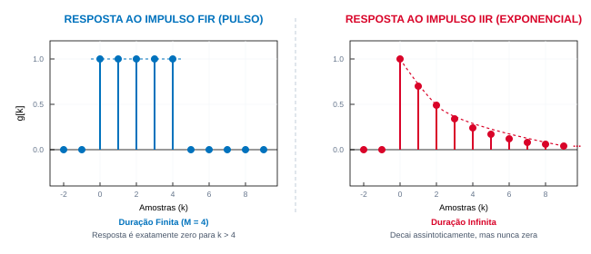
Exemplo FIR 1° ordem
Na equação de diferenças
$$y[k] = b_0 x[k] + b_1 x[k-1]$$
ou$$G(z)=\frac{Y(z)}{X(z)} = b_0+ b_1 z^{-1}$$
Exemplo FIR 2° ordem
Na equação de diferenças
$$y[k] = b_0 x[k] + b_1 x[k-1]+b_2x[k-2]$$
ou$$G(z)=\frac{Y(z)}{X(z)} = b_0+ b_1 z^{-1}+b_2z^{-2}$$
Exemplo FIR 3° ordem
Na equação de diferenças
$$y[k] = b_0 x[k] + b_1 x[k-1]+b_2x[k-2]+b_3x[k-3]$$
ou$$G(z)=\frac{Y(z)}{X(z)} = b_0+ b_1 z^{-1}+b_2z^{-2}+b_3z^{-3}$$
Filtro FIR de ordem M
Na equação de diferenças
$$y[k] = b_0 x[k] + b_1 x[k-1] + \dots + b_M x[k-M]$$
- $b_k$: São os coeficientes (ou parâmetros) do filtro.
- $M$: É a ordem do filtro (representa o atraso máximo).
- $N = M + 1$: É o comprimento do filtro (número de coeficientes ou taps).
Filtro FIR de ordem M
Na equação de diferenças
$$G(z)=\frac{Y(z)}{X(z)} = b_0 + b_1 z^{-1} + \dots + b_M z^{-M}$$
- $b_k$: São os coeficientes (ou parâmetros) do filtro.
- $M$: É a ordem do filtro (representa o atraso máximo).
- $N = M + 1$: É o comprimento do filtro (número de coeficientes ou taps).
Definição do Filtro FIR
Um filtro FIR é caracterizado por uma equação de diferenças:
- A saída depende exclusivamente de valores presentes e passados da entrada.
- Não há realimentação (feedback) de valores anteriores da saída $y[k-1], y[k-2], \dots$
Resposta ao Impulso do filtro FIR
Ao aplicarmos um impulso unitário $x[k] = \delta[k]$ ao filtro, tem-se:
$$y[k] = g[k] = \sum_{i=0}^{M} b_i \delta[k-i]$$
- Pela propriedade de amostragem da função delta, $\delta[k-i]$ é diferente de zero apenas em $k = i$.
Exemplo FIR 2° ordem
Na equação de diferenças
$$y[k] = 0.5 x[k] + 0.9 x[k-1] + 0.4 x[k-2]$$
então,$$ g[k] = 0.5\delta[k] + 0.9\delta[k-1] + 0.4\delta[k-2] $$
Gráfico da Resposta ao Impulso (2ª ordem)
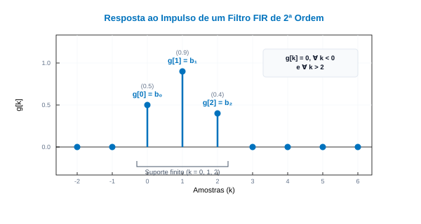
Consequência Importante
Os coeficientes do filtro $b_k$ são idênticos às amostras da resposta ao impulso do sistema:
$$ g[k-i]=b_i\delta[k-i],\quad i=0,\ldots,M $$
A resposta é naturalmente nula fora do intervalo $[0, M]$.
Elementos da Estrutura
O hardware/software do filtro FIR é constituído por três blocos simples:
- Atrasos ($z^{-1}$): Registradores de memória que guardam amostras anteriores da entrada.
- Multiplicadores ($b_k$): Escalam os sinais atrasados pelos coeficientes do filtro.
- Somadores: Acumulam os produtos para gerar a saída final $y[k]$.
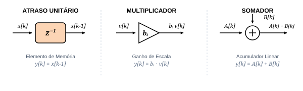
Diagrama em Blocos (Forma Direta)
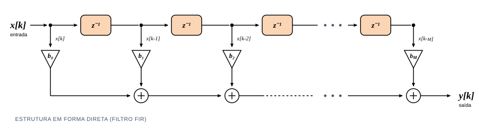
O Filtro de Média Móvel
O Filtro de Média Móvel (Moving Average) é o caso mais simples e intuitivo de um filtro FIR:
- Funcionamento: Calcula a média aritmética das últimas $N$ amostras do sinal de entrada.
- Coeficientes: Todos os coeficientes são idênticos: $b_i = \frac{1}{N}$.
Resposta ao Impulso do Filtro Média Móvel
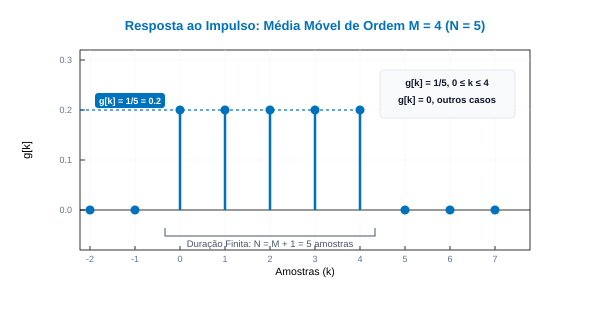
$ y[k]=\frac{1}{5} \sum_{i=0}^{4} x[k-i] $
Resposta ao Impulso do Filtro Média Móvel
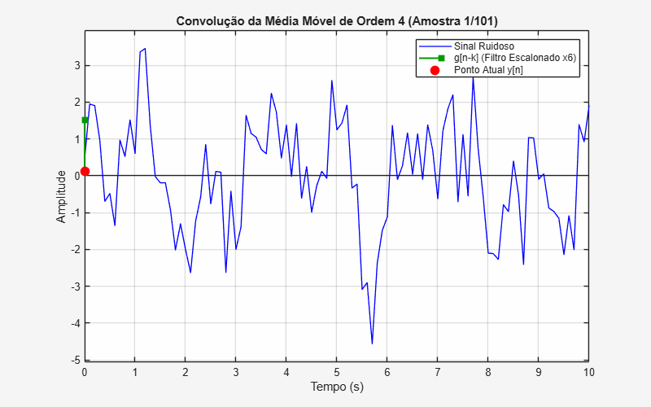
Resposta ao Impulso do Filtro Média Móvel
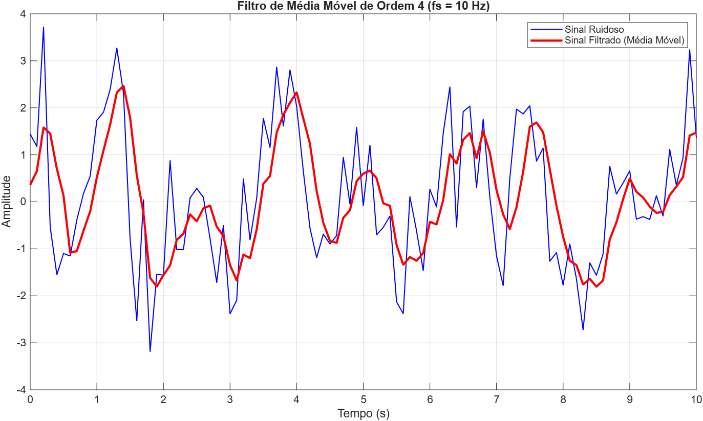
Resposta ao Impulso do Filtro Média Móvel
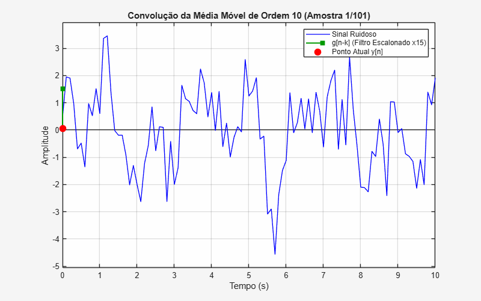
Resposta ao Impulso do Filtro Média Móvel
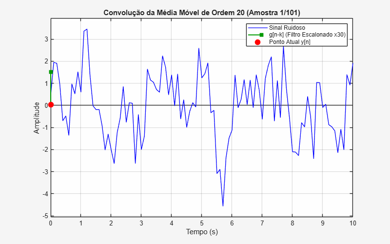
Resposta ao Impulso do Filtro Média Móvel
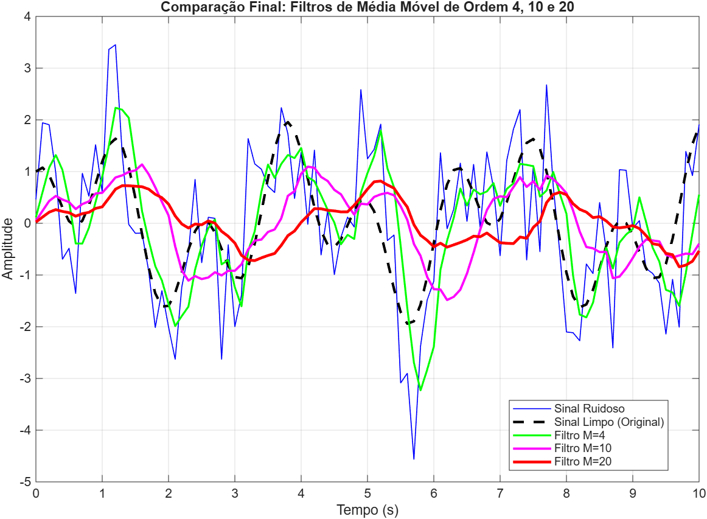
Função de Transferência $G(z)$
Aplicando a Transformada Z em ambos os lados da equação de diferenças:
- Representação do filtro FIR em termos de potências negativas de $z$.
Forma Polinomial do Filtro
Podemos expressar $G(z)$ utilizando potências positivas para facilitar a análise:
- O numerador é um polinômio de ordem $M$ cujas raízes determinam os zeros.
- O denominador é o termo monomial $z^M$.
Distribuição de Polos
Analisando o denominador $z^M = 0$:
- Um filtro FIR de ordem $M$ possui exatamente $M$ polos localizados na origem ($z = 0$).
- Não existem polos em nenhuma outra região do plano complexo $z$.
- Isso simplifica drasticamente a análise de estabilidade do sistema.
Exemplo: Polos e Zeros
Mapa de polos e zeros obtido na simulação MATLAB de ordem $M=60$:
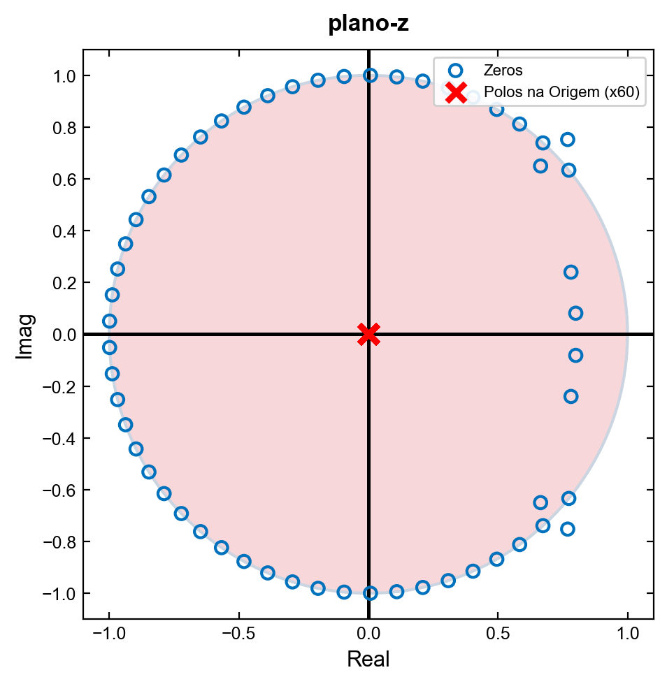
Estabilidade BIBO Garantida
Pelo critério de estabilidade em tempo discreto:
- Um sistema LIT é estável se todos os seus polos residem estritamente dentro do círculo unitário ($|z| < 1$).
- Como todos os polos de um filtro FIR estão exatamente em $z = 0$:
Filtros FIR são intrinsecamente estáveis!
Fase linear vs Não-linear
Um filtro possui Fase Linear se a resposta de fase varia linearmente com a frequência angular $\omega$:
- No qual $\alpha$ é uma constante real positiva.
- Esta propriedade garante distorção harmônica zero na fase do sinal.
Atraso de Grupo Constante
O atraso de grupo ($\tau_g$) é a taxa de variação da fase com a frequência:
$$\tau_g(\omega) = -\frac{d \angle G(e^{j\omega})}{d\omega} = \alpha \quad \text{amostras}$$
- Como $\tau_g(\omega) = \alpha$ é constante:
- Todas as componentes harmônicas sofrem exatamente o mesmo atraso de tempo ao cruzar o filtro.
Fase Linear vs Fase Não-Linear
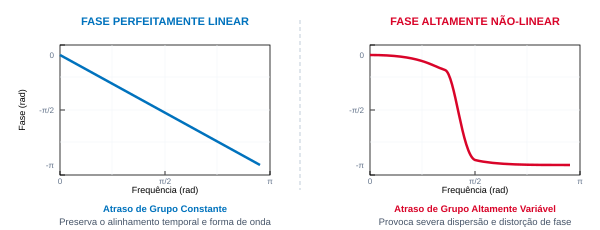
A fase linear garante atraso de grupo constante, enquanto a fase não-linear causa dispersão devido a atrasos variáveis.
Efeito da Fase: Sinal Dente de Serra
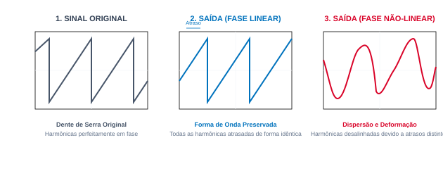
No filtro de fase linear, todas as componentes harmônicas sofrem o mesmo atraso temporal, preservando a forma da onda. Na fase não-linear, o desalinhamento de fase deforma o sinal.
Por que a Fase Linear é Crucial?
A constância do atraso de grupo impede a distorção dispersiva do sinal:
- Sinais Biomédicos (ECG/EEG): Evita alterar a forma geométrica do batimento cardíaco, preservando o valor diagnóstico.
- Sistemas de Áudio de Alta Fidelidade: Mantém o alinhamento temporal entre graves, médios e agudos.
- Telecomunicações: Previne a distorção intersimbólica em canais de dados de alta taxa.
- etc...
Condições para Fase Linear no FIR
Para obter fase linear exata com coeficientes reais, a resposta ao impulso $g[k]$ deve ser simétrica em relação ao centro físico do filtro $\alpha = M/2$:
- Os coeficientes do filtro são perfeitamente espelhados a partir do centro da sequência.
- Garante uma resposta de fase linear com atraso de grupo de exatamente $\alpha = M/2$ amostras.
Exemplo: Resposta ao Impulso Simétrica
Representação gráfica com simetria par ($M=6$, centro em $\alpha = 3$):
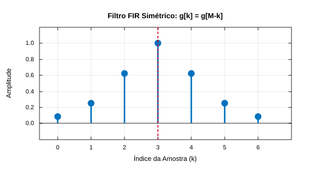
Condição de Antissimetria para FIR
A fase linear também pode ser obtida por meio de coeficientes antissimétricos:
- Os coeficientes têm valores invertidos de sinal simetricamente a partir do centro.
- Esta condição introduz uma defasagem constante adicional de $\pm 90^\circ$ ($\pi/2$ rad).
Exemplo: Resposta ao Impulso Antissimétrica
Representação gráfica com simetria ímpar ($M=6$, centro em $\alpha = 3$):
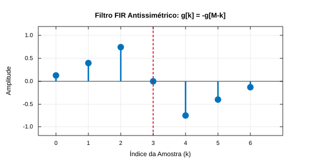
Filtro Passa-Baixa Ideal
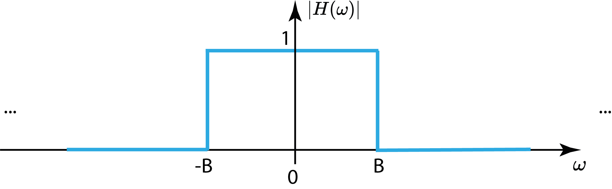
Filtro Passa-Baixa Ideal
A resposta ao impulso ideal calculada resulta em uma função sinc infinita e não-causal:
Resposta ao Impulso Ideal (Sinc)
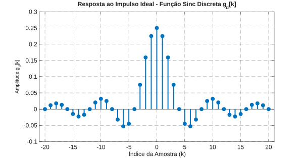
Resposta ao Impulso Truncada (M = 30)
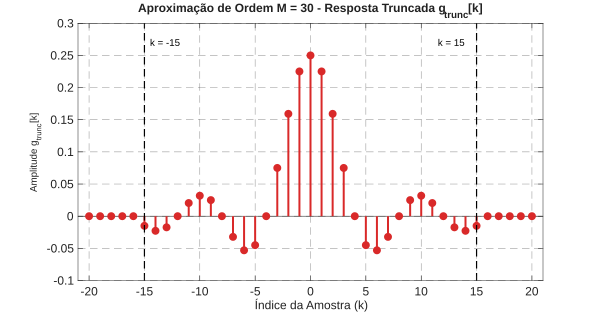
Resposta ao Impulso Causal (M = 30)
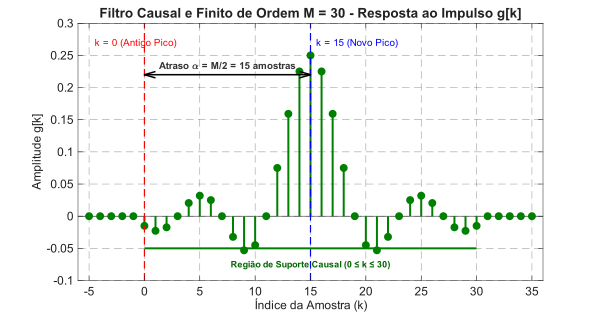
Simulação da Convolução no Tempo
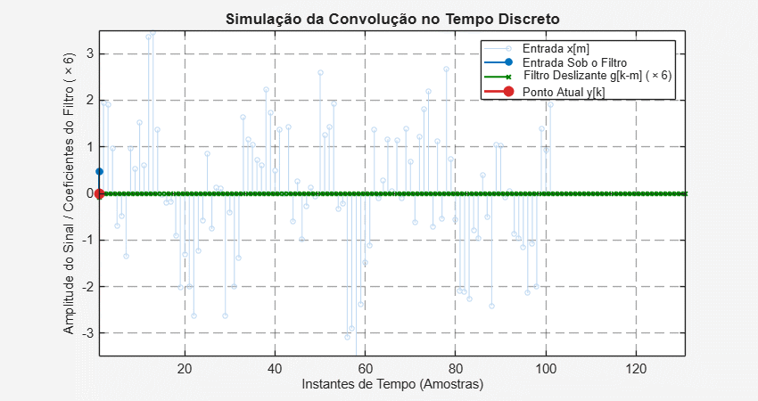
Resposta em Frequência (M = 30)
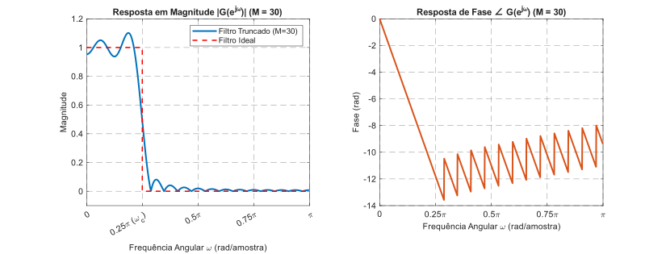
Comparação da Resposta em Frequência
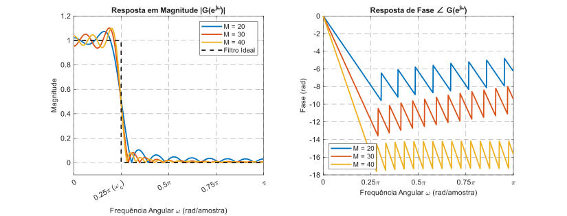
Tornando o Filtro Causal e Finito
Para obter coeficientes causais e finitos de ordem $M$:
- Desloca-se $g_d[k]$ no tempo por $\alpha = M/2$ amostras para torná-la causal.
- Multiplica-se a sequência deslocada por uma função janela $w[k]$ de comprimento $M+1$:
- $$g[k] = g_d[k - \alpha] \cdot w[k], \quad 0 \le k \le M$$
O Fenômeno de Gibbs
O truncamento seco do sinal ideal (Janela Retangular $w[k]=1$) causa ondulações na resposta de frequência próximo à transição:
- Esse efeito oscilatório em degraus abruptos chama-se Fenômeno de Gibbs.
- A ondulação máxima (~9% na amplitude) não diminui com o aumento da ordem do filtro (apenas se comprime em frequência).
- Solução: Usar funções janela suaves para atenuar as bordas de $g[k]$.
A Janela de Hamming
A janela de Hamming reduz significativamente as oscilações espectrais secundárias:
- Atenua suavemente as amostras da resposta nas pontas.
- Atenuação máxima típica na banda de rejeição: -53 dB.
Retangular vs. Hamming (M = 30)
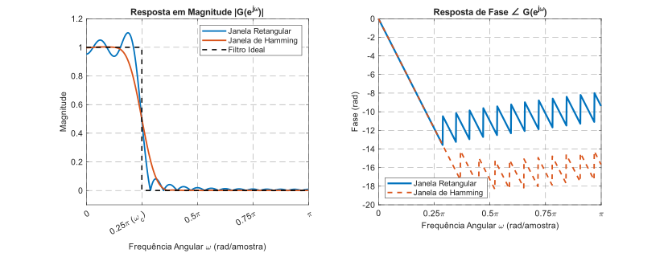
A Janela de Blackman
A janela de Blackman fornece uma transição temporal ainda mais suave:
- Proporciona uma excelente atenuação de alta frequência.
- Atenuação máxima típica na banda de rejeição: -74 dB.
Retangular vs. Hamming vs. Blackman
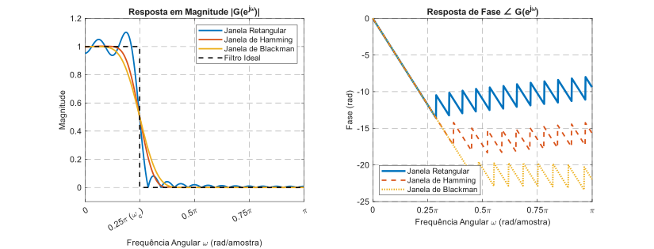
O Compromisso do Projeto (Trade-off)
Existe um compromisso fundamental no janelamento:
- Janelas suaves (Hamming, Blackman): Oferecem alta atenuação na rejeição (menores lóbulos secundários).
- Preço a pagar: Apresentam lóbulos principais mais largos, resultando em uma banda de transição mais larga (menor seletividade espectral para uma mesma ordem $M$).
Principais Vantagens do Filtro FIR
- Estabilidade Absoluta: Polos na origem impedem instabilidades causadas por alteração de parâmetros.
- Fase Linear Exata: Filtro pode ser projetado para não causar distorção de fase no sinal.
- Sem Realimentação: Imunidade a ruídos de quantização recursivos e transbordamento numérico (overflow).
Limitações e Desvantagens
- Alta Ordem (M grande): Exige muitos coeficientes para transições espectrais abruptas.
- Alto Custo Computacional: Elevado número de multiplicações e somas necessárias por amostra.
- Latência Temporal: O atraso introduzido é proporcional à ordem ($\tau_g = M/2$), limitando seu uso em algumas aplicações, por exemplo, em malhas de controle.
Resumo dos Conceitos Importantes
- Filtros FIR: Sistemas de resposta finita, sem realimentação e inerentemente estáveis (polos na origem $z=0$).
- Fase Linear: Mantém o atraso de grupo constante para todas as componentes, evitando distorções de fase nas formas de onda.
- Janelamento: Substitui o truncamento abrupto de Gibbs por transições suaves nas bordas, aprimorando a rejeição de ruídos.